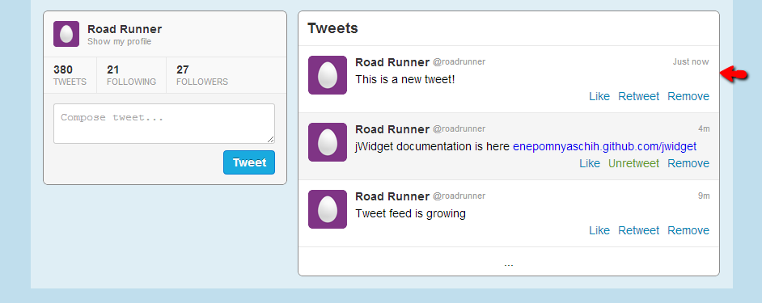

Tutorial. Part 6. Collection bindings
Source: https://github.com/enepomnyaschih/mt/tree/mt-2.1-6 (Git branch).
Now we switch to the most wonderful and important part of jWidget which makes it special - it is collection bindings. In this tutorial, we add a feature of a new tweet posting and an existing tweet removal.
Let's start with a bit of refactoring. Remember how we bind Like/Unlike buttons in view to the properties in model? We will use a similar approach to bind tweet feed to application data model. The model will trigger all kinds of tweet collection modification events and the view will handle them appropriately. The easiest way to make it possible is to replace tweet array with List in ApplicationData class.
src/model/ApplicationData.ts
import List from "jwidget/List"; import Profile from "./Profile"; import Tweet from "./Tweet"; export default class ApplicationData { readonly tweets: List<Tweet>; constructor(readonly profile: Profile, tweets: Tweet[] = []) { this.tweets = new List(tweets); } static createByJson(json: any) { return new ApplicationData(json.profile, (<any[]>json.tweets || []).map(Tweet.createByJson)); } }
List has all kinds of events to notify the view about its modification. We could subscribe to these events and handle them manually by updating the corresponding tweet view list. However, it would be too time consuming and difficult. Instead, we are going to apply mapList synchronizer to synchronize the view list to the model list.
src/view/TweetFeed.ts
import {destroy} from "jwidget";
import Component from "jwidget/Component";
import {mapList} from "jwidget/mapper/list";
import ReadonlyList from "jwidget/ReadonlyList";
import template from "jwidget/template";
import Tweet from "../model/Tweet";
import TweetView from "./TweetView";
@template(require<string>("./TweetFeed.jw.html"))
export default class TweetFeed extends Component {
constructor(private tweets: ReadonlyList<Tweet>) {
super();
}
protected renderTweets() {
return this.own(mapList(this.tweets, tweet => new TweetView(tweet), {destroy}));
}
}
Now the view list is created from model via list item conversion function mapList. It returns a list of tweet views. It works better here than usual map method for the following two reasons.
First, it subscribes itself to all source list modification events and synchronizes target list to source list any time the modification happens. This is an example of jWidget 2 data binding mechanism. Please notice that mapList can be used to map not just model to view, but also model to another model and view to another view. This is an advantage of jWidget 2 over the other frontend frameworks. This is very flexible and transparent solution.
Second, it controls life time of the mapped items. Pay attention to own method call. The list destruction unbinds it from the model, which allows the browser to release the memory and prevent unintended source list modification handling. Also, we pass destroy argument to mapList method - it instructs the synchronizer to destroy tweet views when they are not needed anymore, i.e. once the corresponding tweets get removed from the model or once the entire target collection gets destroyed.
The refactoring is done, and you can run the application in your browser to make sure that it works as before. Now, let's utilize List to handle tweet creation. Bind ProfileBox to jQuery "submit" event.
src/view/ProfileBox.ts
constructor(private data: ApplicationData) {
super();
}
get profile() {
return this.data.profile;
}
protected renderComposeForm(el: JQuery) {
el.on("submit", event => {
event.preventDefault();
const text: string = <any>this.getElement("compose-input").val();
if (!text) {
return;
}
this.data.tweets.add(new Tweet({
fullName: this.profile.fullName,
shortName: this.profile.shortName,
avatarUrl48: this.profile.avatarUrl48,
contentHtml: text,
time: new Date().getTime(),
like: false,
retweet: false
}), 0);
this.getElement("compose-input").val("");
});
}
And we must now pass ApplicationData to ProfileBox instead of just Profile.
src/view/Application.ts
protected renderProfileBox() {
return this.own(new ProfileBox(this.data));
}
That's it! Run the application in browser. After text input and "Tweet" button click, you'll see a new tweet in tweet feed:
Our next goal is to activate Remove button in tweets to remove them from the feed. Let's bind a handler to button click. We need to pass ApplicationData all the way to TweetView.
src/view/Application.ts
protected renderTweets() {
return this.own(new TweetFeed(this.data));
}
src/view/TweetFeed.ts
constructor(private data: ApplicationData) {
super();
}
protected renderTweets() {
return this.own(mapList(this.data.tweets, tweet => new TweetView(this.data, tweet), {destroy}));
}
src/view/TweetView.ts
constructor(private data: ApplicationData, private tweet: Tweet) {
super();
}
protected renderRemove(el: JQuery) {
el.on("click", event => {
event.preventDefault();
this.data.tweets.removeItem(this.tweet);
});
}
Run application and try to click Remove button in a tweet.

In this tutorial we've reviewed a typical scenario of list item converter (mapList) usage, but you shouldn't stop on this. You should try other collection bindings, because there are reasonable use cases for all of them. Find them in Documentation root, Collection bindings section.
Notice that binding usage is not constrained by view only. For example, you may create an indexer in your model just to speed-up access to the items by key. Sorter can sort a Set of tweets by their publication date, and you won't need to think of the position to insert a new tweet at. There is a lot of scenarios, and I recommend you to try them in practice.